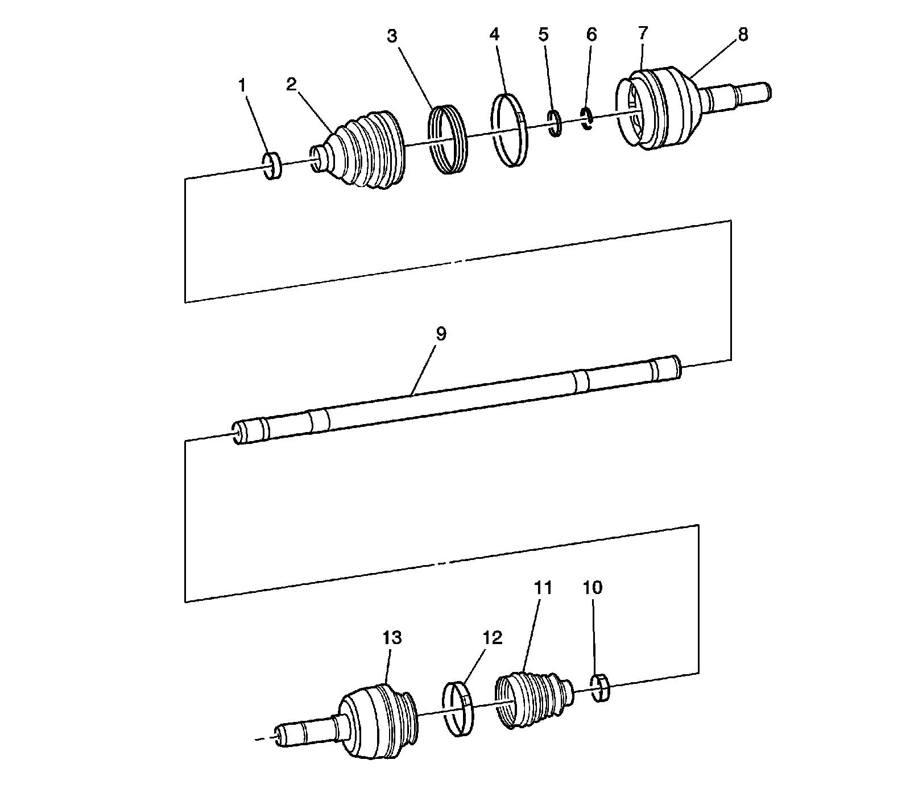

Rear Wheel Drive Shaft Disassembled Views (RWD)
Rear Wheel Drive Shaft Disassembled Views (RWD)
Wheel Drive Shafts Disassembled Views
Rear Wheel Drive Shaft Disassembled Views:

1 - Shaft Clamp
2 - Outer Joint Seal
3 - Boot Insert
4 - Joint Clamp
5 - Retaining Ring, Large
6 - Retaining Ring, Small
7 - Can, Joint
8 - Outer Joint Assembly
9 - Bar, Wheel Drive Shaft
10 - Shaft Clamp
11 - Inner Joint Seal
12 - Joint Clamp
13 - Inner Joint Assembly